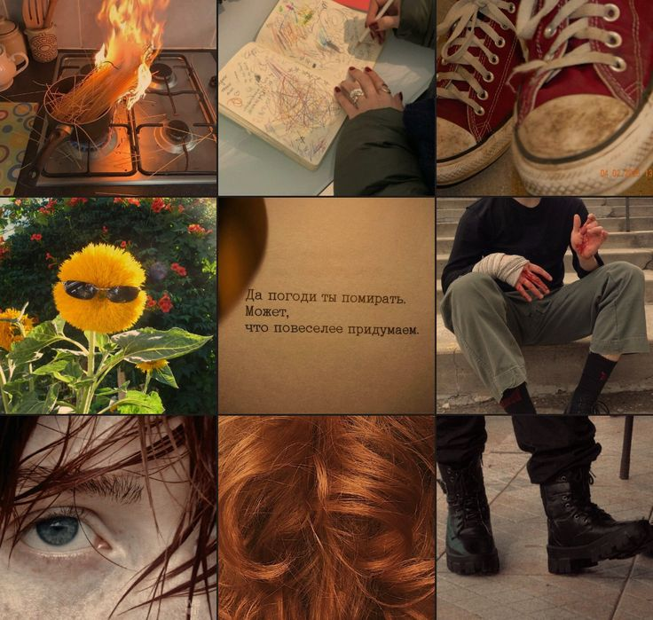
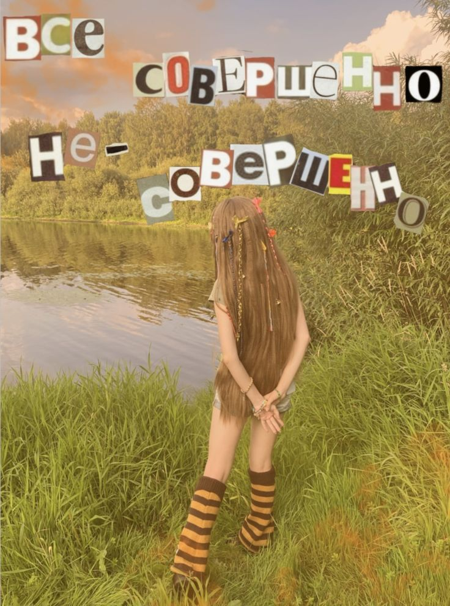
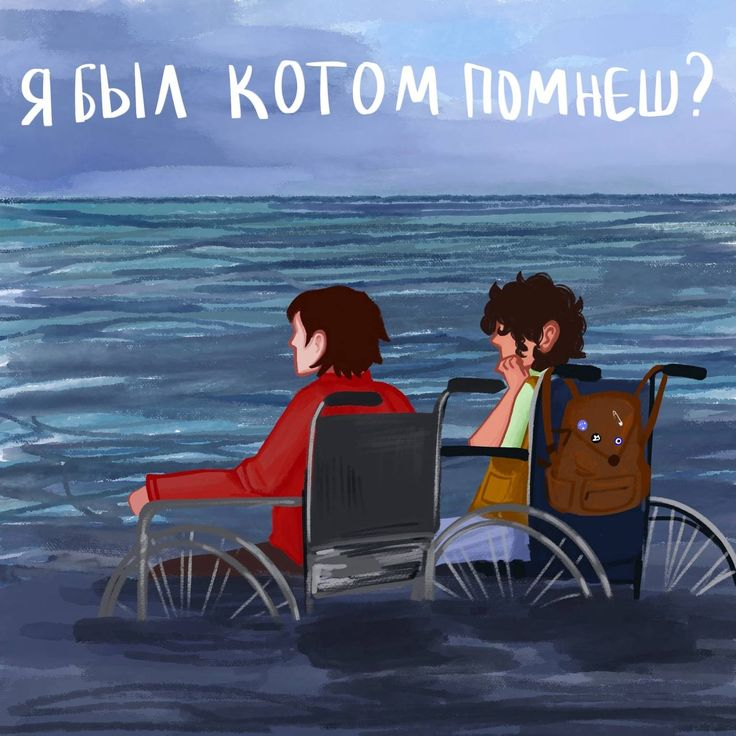
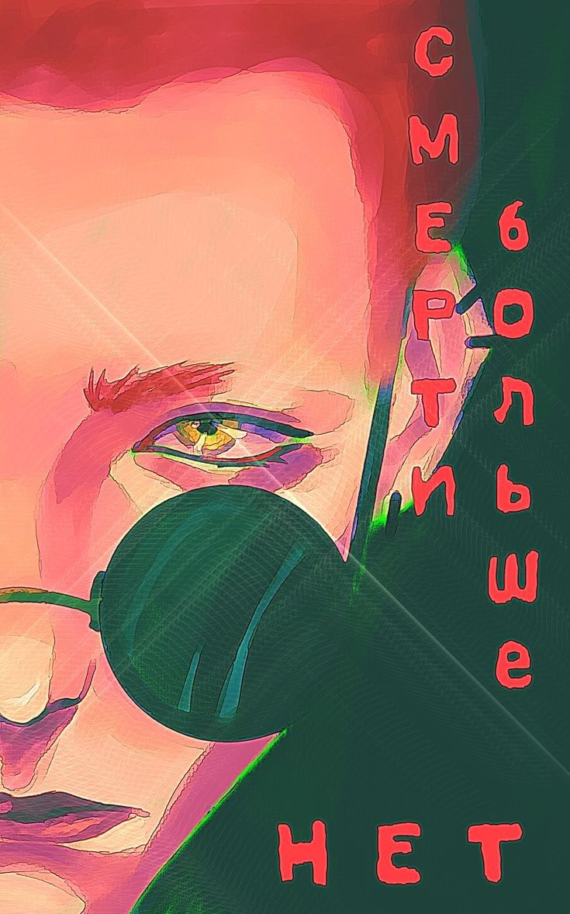
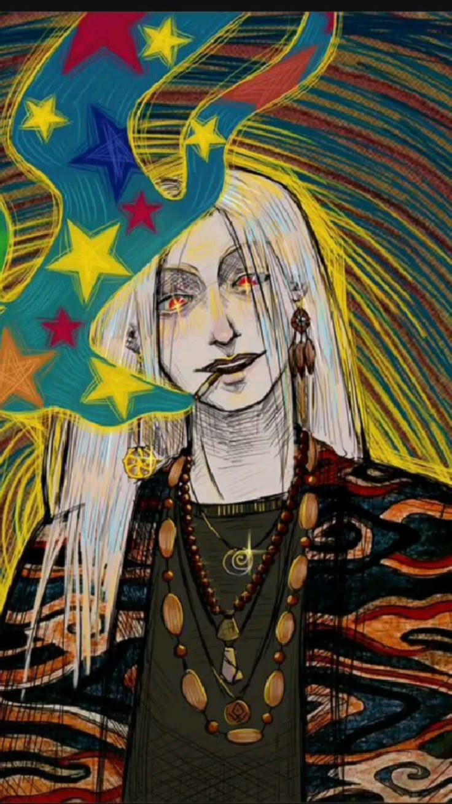
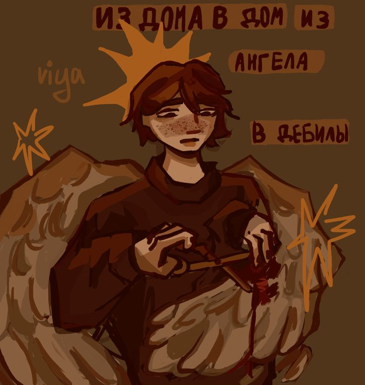

Рис. 1. Эстетика книги ДВК (Дом В Котором...).

Рис. 2. Косплей на русалку.

Рис. 3. Курильщик был котом.

Рис. 4. Рыжий гвоорит Сфинксу, что Смрети больше нет.

Рис. 5. Седой говорит с Кузнечиком.

Рис. 6. Исповедь Красного Дракона.
 Рис. 7. Дружба через время.
Рис. 7. Дружба через время.
 Рис. 8. Разговор с Домом.
Рис. 8. Разговор с Домом.